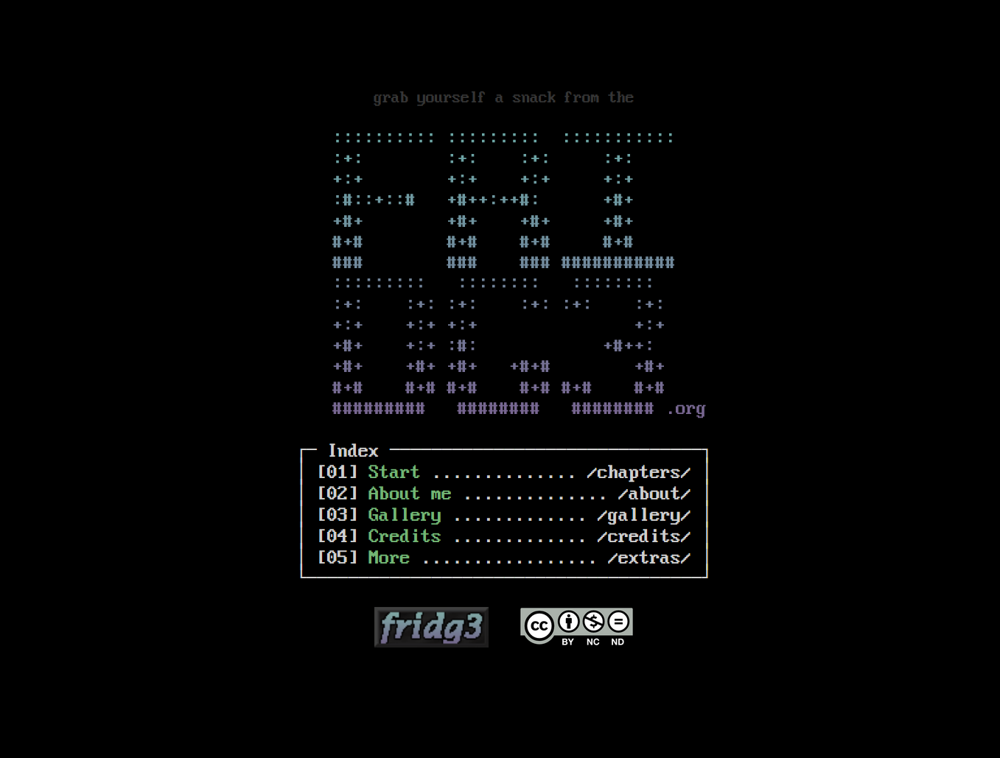

fridge @fridgestuff 13/03/26
you could also upload images here, but unlike in cyberdeck, you were limited to one image per post and it would always display as the last element.

fridge @fridgestuff 13/03/26
how does it work? good question!
you'd log into the page at /admin/, and then you'd be able to make a post through there. very functional, but less "automatic" than the cyberdeck version.
fridge @fridgestuff 13/03/26
the microblog page isn't functional because this version of the website doesn't support PHP... which sucks! but it's chill, this is only here for preview purposes anyway.
total posts: 3